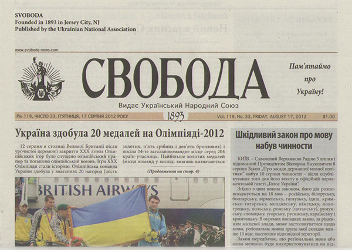
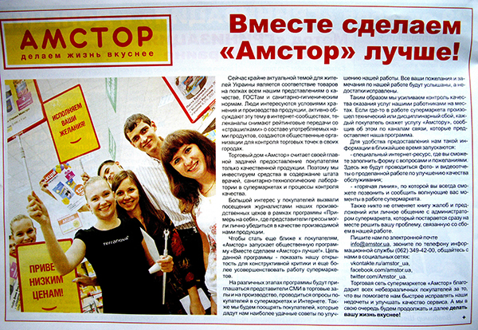
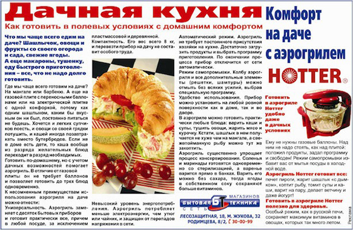
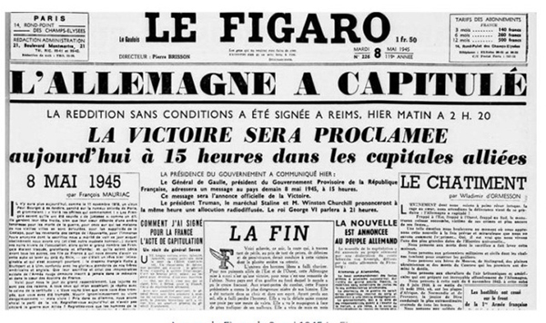
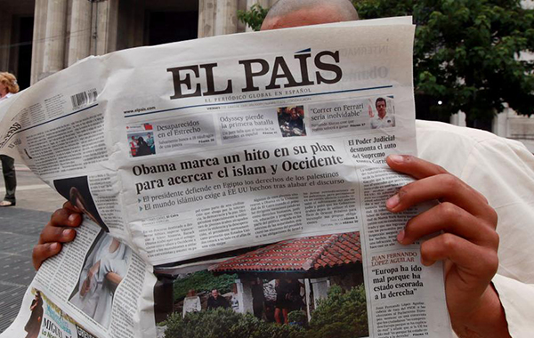
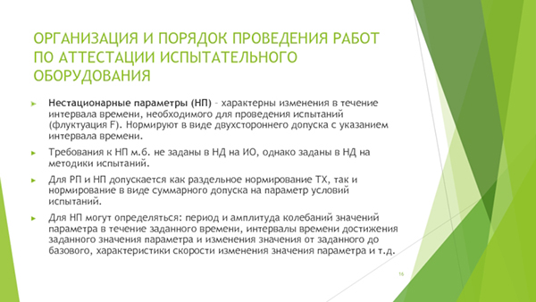

Общие признаки
Толковый словарь С. И. Ожегова даёт следующее определение:
Статья — это научное или публицистическое сочинение небольшого размера. Газетная, журнальная с. Критическая с.
В более позднем источнике — толковом словаре Т. Ф. Ефремовой — ко всему прочему добавляется научно-популярный жанр.
В настоящее время также можно выделить рекламную статью. У популярных веб-публикаций есть свои особенности, о которых скажем несколько позже, но в целом они дублируют устоявшуюся систему жанров.
Оговоримся сразу, что поведём речь об авторских, т. е. написанных преимущественно одним человеком (не считая правок), статьях. (Им в противовес существуют коллективные, чаще всего используемые в науке (при создании справочников, словарей, энциклопедий)). Материал, создаваемый одним автором, в большей степени сохраняет целевое, тематическое и стилевое единство. Именно этим он и интересен.
Цель статьи — довести до сознания читателя определённые факты, положения, суждения либо чьё-либо мнение о них.
Целевые установки задают следующие признаки:
- небольшой размер;
- как правило, один предмет исследования;
- информационный, разъяснительный, аналитический или критический характер;
- рассуждение как определяющий тип текста;
- объективизация повествования (может быть нарочито нарушена в рекламе или блоге).
Это наиболее общие черты. Каждый жанр статьи имеет свои характерные особенности.
Виды статей в журналистике и требования к их содержанию
Классификация статей в публицистике далеко не однозначна. Даже само понятие “статья” в одних источниках выделяется как общее, в других — как частное.
Рассматривая этот термин как общее наименование (вслед за Ожеговым), большинство учёных делит статьи в журналистике на следующие группы (по цели написания и документальному наполнению):
- информационные (новостные, репортажные, беседы, отчёт и собственно информационные статьи);
- аналитические (проблемные, рецензии, обзорные; некоторые сюда же причисляют и научно-популярные);
- художественно-публицистические (где важнее не само событие, а его описание и мнение автора о нём — очерк, фельетон, памфлет).
Несколько неустойчиво положение интервью в этой классификации: оно может быть создано с различной целью, следовательно, относиться к любому разделу.
Также возникает вопрос: куда отнести рекламу? По-видимому, придётся для сего жанра утверждать четвёртый пункт.
Публицистическая статья, как никакая другая, призвана анализировать самые значимые факты и проблемы действительности, получать масштабные выводы. А потому ясная авторская позиция и идейная выдержанность обязательны.
Присущи ей также следующие особенности:
- В качестве предмета изображения может быть взято почти любое явление действительности, имеющее значение для человека.
- Факты для статьи подбираются как из окружающего мира, так и из личного опыта пишущего.
- Цель написания — разъяснение явления, выявление причин и следствий, анализ или критическое рассмотрение чего-либо, а также воздействие на читателя.
- Тип текста — рассуждение с присущим ему комплексом положений, доказательств и выводов.
- Построение текста логическое, с использованием чётких и однозначных формулировок.
- Характерно использование научной, общественно-политической и иной терминологии.
Рассмотрим некоторые виды статей по отдельности.
Новостная статья
Новостная статья отличается от сестёр предельной краткостью, чёткостью и насыщенностью. Она призвана дать максимально ёмкие ответы на вопросы: что, где, когда, почему произошло и кто ответственен за эти события.
Главной ценностью жанра является актуальность, истинность и объективность. Адресат получает сведения быстро, воспринимает и осмысляет их в течение короткого времени, после чего, в большинстве случаев, переходит к другим новостям.
Заинтересовавшись проблемой, читатель может обратиться за более подробной информацией, которая раскрывается шире в репортажной и обзорной статьях.
Информационная статья
Информационную статью пришлось поместить в классификацию самостоятельно, ибо места ей там не нашлось, в то время как это достаточно распространённый жанр.
Сюда можно отнести как повествование о важном событии прошлого и настоящего, так и разъяснения законов, полезные советы и пошаговые инструкции. Пример текста — инструкция по получению налогового вычета в “Российской газете”, а также многочисленные описания изготовления чего-либо — от варки каши до постройки дома.

Информационные статьи делятся на повествовательные и описательные. Целью их является ознакомление читателя с явлениями жизни, разъяснение каких-либо деталей. Обращаясь к такого рода текстам, читатель хочет получить ответ на вопросы “что такое” и “как сделать”. Демонстрация точки зрения автора, равно как и полемика, тут неуместна, однако отсылка к личному опыту в инструкции допустима.
Главное требование к информационной статье — её информативность, т. е. содержательность и насыщенность информацией. По-настоящему информативный контент полностью раскрывает суть означенной проблемы, содержит исчерпывающие ответы на вопросы читателя и не допускает “воды”.
Обзорная статья
Обзорная статья может быть написана на разные темы — от оценки состояния современной науки, искусства и прочего до сравнительной характеристики развития разных отраслей экономики и даже отдельных групп товаров.
Главная её особенность — широта и детальность рассмотрения, глубина анализа фактов, объективность изложения материала.
Рекламная статья
Текст, созданный с целью продвижения товара или услуги, попадает под определение рекламной статьи. С ними мы сталкиваемся регулярно и повсеместно. Ещё бы, ведь размещение рекламы партнёров является ощутимой статьёй дохода многих источников информации.
Рекламная статья — это не всегда продающий текст, призванный заставить читателя в течение минуты после прочтения заказать товар. Реклама, размещённая в печатном издании, может иметь более лояльный характер: сначала она вызовет интерес к продукту, потом заставит задуматься о его необходимости, затем подскажет нужного производителя и объяснит его конкурентные преимущества, а на заключительном этапе подтолкнёт читателя к двери магазина. Предоставляя потребителю отсрочку, маркетолог рассчитывает на его большее доверие.
Свалившись на головы украинцев в 1990-х, реклама использовала все средства для достижения цели и больше радовала яркостью, чем корректностью. Но кричащие лозунги, глупые образы и нелепые неологизмы более характерны для телевидения, ограниченного временными рамками трансляции, чем для прессы, которую аудитория может перечитывать. Стиль рекламной статьи ни в коем случае не будет вызывать отторжения, иначе читатель просто перелистнёт страницу.

Самым эффективным способом удержания внимания и пробуждения интереса аудитории является нативная (естественная) рекламная статья — это та самая скрытая реклама, проглотив которую, потребитель не замечает, что съел не то, что хотел, а нужные вещества, как при эффекте 25-го кадра, в организме у него отложились.
Нативная реклама нередко маскируется под обычную аналитическую статью (исследование пользы тех или иных методов лечения или сравнение различных продуктов), повествование о жизни (история успеха некоего персонажа).
Создаётся такой контент с целью незаметного привлечения интереса к товару, повышения имиджа производителя (массовое сознание, закалённое эпохой 90-х, отождествляет навязчивую рекламу товара с его плохим качеством) и уровня доверия к нему.
Поэтому характерным примером нативной рекламы является интервью с руководителем компании, рассказывающим о своём честном карьерном росте, гуманной кадровой политике, безопасных методах производства и качественном сырье.
При этом в тексте мы можем не встретить упоминания конкретного товара — у нас создан имидж компании как знакомой и заслуживающей доверия, а найти её продукцию в интернете или магазине не составит труда. Нативная статья, по сравнению с продающей, рассчитана на более отсроченное воздействие на читателя, но составить её труднее, нежели обычную рекламную.

Интервью с руководителем (как и повествование об истории компании) можно отнести к отдельному типу — имиджевой статье. Замышляется она с целью создать (укрепить) положительную репутацию отдельному лицу или целой корпорации.
Жанры украинской журналистики и их современные трансформации
Не помешает сказать несколько слов о хорошо забытом старом. В советское время публицистика жила по особым законам. Для статей существовала другая классификация: выделялись проблемные, передовые и теоретико-пропагандистские разновидности.
Проблемная статья призвана исследовать и, по возможности, разрешить острые общественные и нравственные противоречия, возникающие по мере развития социума. Отличительной её особенностью является дискуссионный характер.
Передовая статья выражает мнение редакционного коллектива (как вариант, и стоящей над ним идеологии некоей части общества или государственной власти в целом) на злободневные вопросы.
Жанр неоднороден и может быть поделен по способу подачи материала на постановочные и полемические статьи, по глубине обобщения — на проблемные и оперативные, а также по тематике.
Украинская “Передовица” открывала собой очередной выпуск печатного издания и с присущей ей категоричностью и оценочностью вещала о всеобъемлющем превосходстве коммунистического общества над “загнивающим Западом”, была исполнена глубокими обобщениями и содержала рекомендации по дальнейшему развитию страны.

В настоящее время подзабытый жанр постепенно возвращается на газетные полосы. Утратив, в большинстве случаев, идеологическую назидательность, передовая статья сохраняет функцию формулирования редакционной линии по отношению к значимому для страны событию либо определяет тему выпуска, что более свойственно для журналов.
Схожие задачи имеет теоретико-пропагандистская статья: она формирует политическое, нравственное или научное мировоззрение. Достигается это за счёт разъяснения новых явлений или идей, раскрытия смысла современных общественных процессов.
Для текстов данного вида характерно ненавязчивое убеждение методом доверительного разговора с читателем, оценочного описания и подбора жизненных примеров. Язык должен быть простым, а рассуждения логичными. Тем не менее, в результате прочтения адресат должен прийти к однозначным выводам.

Научные статьи: структура и некоторые особенности стиля
Этот жанр стремительно набирает обороты и охватывает всё более широкие массы. Ещё пару десятилетий назад он был прерогативой преподавателей и аспирантов, а сегодня знаком не понаслышке каждому студенту вуза.
Такая статья — это мини-исследование, ёмко и кратко освещающее новый (а иначе зачем писать?) научный вопрос.
По цели написания можно выделить следующие разновидности:
- общеисследовательские,
- практико-ориентированные,
- полемические.
По характеру рассматриваемого материала и способу его освещения:
- научно-теоретические,
- научно-практические,
- общеисследовательские.
Объём научного исследования зависит от цели написания, материала научной дисциплины, требований печатного издания, учёной степени автора (часто по принципу чем выше, тем больше) и некоторых других факторов.
Свобода творчества автора ограничена чёткими требованиями стиля. В научном стиле, как ни в каком другом, существуют рамки жанра. Необходимое условие — цитация (подробная ссылка на авторитетный источник).
Для научной статьи характерна следующая обязательная структура:
- заголовок, чётко обозначающий тему исследования;
- аннотация (как правило, ограниченная по количеству символов), указующая основные вопросы статьи;
- ключевые слова, используемые для лучшего ориентирования в электронных библиотечных системах и внесения в бумажные тематические каталоги статей в библиотеках;
- вступление, в котором обычно объясняется актуальность проблемы;
- основная часть с подразделами;
- заключительная часть, состоящая из выводов;
- список использованной литературы.
Материал основной части состоит из рассмотрения краткой истории вопроса, т. е. предыдущих исследований по данной теме (с обязательной ссылкой на источник) и собственных размышлений автора, подкреплённых примерами и доказательствами.

В научном стиле обязательно использование специальной терминологии и соответствие нормам литературного языка. Характерными особенностями речи является использование лексических штампов (следует отметить, можно сделать вывод), большого количества абстрактных существительных (соотнесённость, наполненность, специфичность), употребление местоимения мы вместо я (мы считаем нужным добавить), обилие пассивных конструкций (теорема доказана, выводы получены, учёными неоднократно отмечалось), кратких прилагательных (гипотеза верна), причастных и деепричастных оборотов, сложноподчинённых предложений и других специфических языковых средств. Повествование ведётся объективно, эмоциональная составляющая не допускается.
Такие стилистические требования объясняются тем, что научная работа предназначена для письменного восприятия специалистов узкого профиля, владеющих предметной терминологией. Если на материале статьи делается устный доклад, он предполагает упрощение повествования.
Статья в интернете
Век информационных технологий диктует новые способы донесения информации до адресата и, соответственно, новые жанры.
Интернет-статья существует в тех же разновидностях, что и опубликованная на бумаге. Более того, часто она дублируется в обоих источниках, как, например, газетные репортажи или научные исследования.
Несколько по-иному может выглядеть статья в авторском блоге: в зависимости от частоты наполнения блога, она может освещать более узкие вопросы и довольствоваться меньшим объёмом, чем в журнале.
В наибольшей степени это применимо к информационным статьям (инструкциям и прочим описаниям): они призваны ответить на краткие и предельно конкретные пользовательские вопросы, например: как размножить землянику черенками, как размножить землянику семенами, как ухаживать за земляникой весной и т. д.
Небольшая дозировка информации облегчает читательское восприятие, помогает быстро получить нужный ответ и способствует переходу по внутренним ссылкам в случае возникновения дополнительных вопросов (при наличии грамотного меню).
Впрочем, некоторые авторы предпочитают писать объёмные, но хорошо структурированные тексты (в таком случае оглавление должно быть кликабельным, чтобы читатель мог сразу перейти к интересующему разделу сайта).
Отдельной разновидностью интернет-статьи является СЕО-статья. Это текст, содержащий ключи для распознавания поисковыми системами. Именно благодаря ключевым словам пользователь находит нужную информацию, введя запрос в окошечко “Яндекса” или “Гугла”. Подробнее о СЕО мы уже писали.
Впрочем, говорить о её принадлежности к особому жанру оснований мало: СЕО-статья преследует различные цели, критерием качества здесь является не только её грамотная оптимизация, но и незаметность наполнения ключами для читателя, а значит, специфических языковых средств он не обнаружит. Поэтому приставка СЕО- существует только для копирайтера и заказчика и является “тайным шифром”, указывающим на особые методы построения и обработки текста.
Общие требования к написанию статей
Наговорившись вдоволь о статье, обсудим, как она пишется.
Вне зависимости от жанра, к ней существуют определённые требования:
- наличие чётко сформированной авторской идеи,
- соответствие заголовка теме и описываемому материалу,
- ясность хода авторских рассуждений,
- продуманность композиции,
- логическая адекватность выводов (озвученных или неозвученных в тексте).
Чтобы статья выглядела серьёзно, журналисту или копирайтеру (равно как и студенту, ожидающему публикации в научном сборнике), предстоит проработать большое количество источников. Для журналиста это могут быть непосредственно наблюдаемые события, подкреплённые мнением участников или авторитетных лиц, а копирайтеры и учащаяся (или учёная) публика чаще обращаются к письменной информации.
Даже если тематика будущего труда знакома автору не понаслышке (например, животновод с 20-летним стажем рассказывает о лучших молочных породах коров), не помешает подкрепить изложение собственных знаний ссылками на энциклопедии, современные исследования и т. п.
Приступая к созданию статьи, необходимо чётко представлять, о чём она будет (её тему), к чему должна подвести читателя (идею), рассмотрением каких фактов это может быть достигнуто (содержание).
Бывает, что в ходе работы над статьёй её идея меняется (зачастую в зависимости от содержания: к примеру, отбирая факты для научной работы, учёный склоняется к определённой мысли, но, проведя тщательный анализ, получает противоположные выводы). Этого не нужно бояться – главное, чтобы результат получился логичным.
Как правило, на остов будущей статьи постепенно нарастает её содержание и необходимые языковые средства. Вступление, мотивирующее на прочтение, основное содержание с подразделами и соответствующие ходу изложения выводы (или иное заключение) — вот минимум, из чего состоит материал. Ранее были изложены более полные рекомендации по написанию интересной статьи.
Наши современники (и не только), получающие удовольствие от упражнений в словесности, резонно размышляют, как заработать на своём таланте.
Увы, научные сотрудники, обязанные публиковаться, в редких случаях получают прибыль от статей. Журналистам в этом плане проще: достаточно найти платёжеспособное СМИ. Подработкой (а для кого-то и основным источником дохода) может стать копирайтинг, благо в наше время востребованы материалы любой тематики, в том числе узкоспециальной.
Приходите на наше обучение копирайтингу. Чтобы освоить это ремесло, придётся потрудиться, но результаты того стоят.
Прощаюсь с вами, я желаю вам творить и получать моральное и материальное удовлетворение!